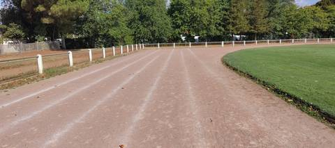
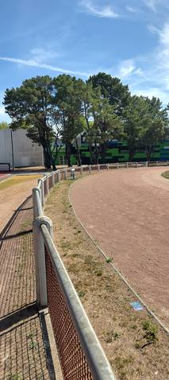
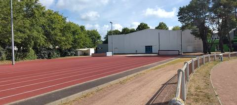
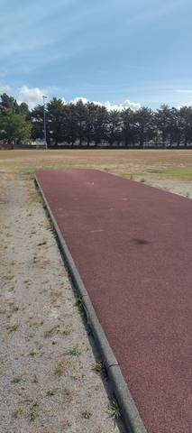
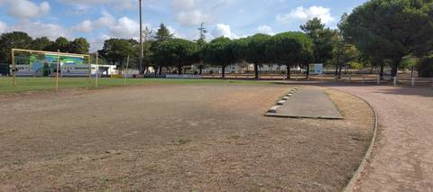
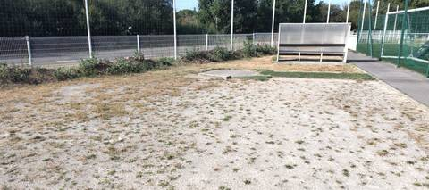
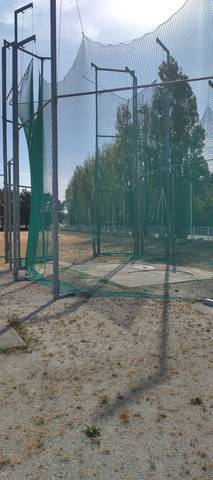
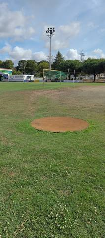
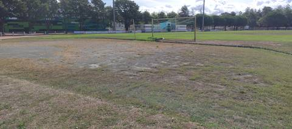

{kind=link}
{kind=link}
{kind=link}
{kind=link}
{kind=link}
{kind=link}
{kind=link}
{kind=link}
{kind=link}
Un bon vieux stade comme je les aime. La piste est en cendrée et les couloirs n'y sont pas très bien définis, mais tout le reste est là : de bonnes lignes droites en synthétique pour la longueur et le triple saut, un sautoir à la perche, une cage pour le disque et le marteau, une aire de javelot et beaucoup d'aires de lancer du poids. Des mini-haies de steeple traînent sur place, mais sans rivière. Un anneau de 400 m, et un endroit vraiment agréable.
Stade Jean Vincent
12 avenue des sports, 44250 Saint-Brevin-les-Pins · Loire-Atlantique
Stade Jean Vincent est un équipement d'athlétisme situé à Saint-Brevin-les-Pins (Loire-Atlantique), en Pays de la Loire. Il dispose d'une piste de 400 m en cendrée / stabilisé. On y trouve sautoir longueur, triple saut, sautoir à la perche, lancer du poids, lancer du disque, lancer du marteau et lancer du javelot. Le site propose l'éclairage, des vestiaires et des douches.
Photos









Il manque sûrement une photo
Les sautoirs et les aires de lancer sont ce que la donnée publique décrit le plus mal, et ce qu'on photographie le moins. Un gros plan du sol, une perche bâchée, un bac de sable envahi : chacun ajoute ce qu'aucun champ ne porte.
Envoyer une photoSans compte GitHubPiste
- Revêtement
- Cendrée / stabilisé
- Développement
- 400 m
- Type de piste
- Anneau de stade d'athlétisme
- Configuration
- Plein air
- Mise en service
- 1974
- Dernière rénovation
- 2016
Agrès recensés
- Sautoir longueur
- Triple saut
- Sautoir à la perche
- Lancer du poids
- Lancer du disque
- Lancer du marteau
- Lancer du javelot
- Sautoir hauteur
Accès & services
- Accès libre
- Non / réservé
- Éclairage
- Oui
- Vestiaires
- Oui
- Douches
- Oui
- Sanitaires
- Oui
- Tribunes
- 200 places
Avis des athlètes
Le ministère déclare un revêtement synthétique : l'anneau de 400 m est en réalité en cendrée, et ses couloirs, tracés à la chaux, sont à peine lisibles. Les lignes droites, elles, sont bien en synthétique et en bon état — ce sont elles qui portent les élans de longueur et de triple saut. Des mini-haies de steeple sont entreposées sur le site, mais il n'y a pas de rivière : le steeple n'y est pas praticable. Visité le 20 août 2026.
Autres sites du département
- College Lycee Saint Louis
- Stade Léo Lagrange
- Lycee Aristide Briant
- Lycee Professionnel Jean Brossaud
- Complexe de la Viauderie
- Complexe Sportif Reton
Signaler une erreur ou compléter la fiche
Réf. I441540035 · Source : Data ES + communauté — Data ES, ministère chargé des Sports, Licence Ouverte 2.0. Les données sont déclaratives et peuvent être incomplètes : vérifiez les conditions d'accès avant de vous déplacer.